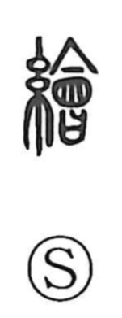

絵

Uncategorized
Kun: e, egaku | On: kai
picture ・ painting ・ drawing
Explanation
絵 is a phono-semantic character. In its traditional form 繪, the silk-thread element signals textiles, while 會 serves as the phonetic. Shirakawa notes that 會 originally pictured a vessel in which various foods were gathered together, an image of mixing and assembling; carried into 繪, it suggests bringing many colors together. Thus the character first referred to richly colored woven patterns and textile designs, and only later broadened to mean a pictorial image and the act of drawing. The Analects already speak of painting practice—“when painting, the white (素) comes at the end”—a reminder that the art of finishing with color was early and well understood.